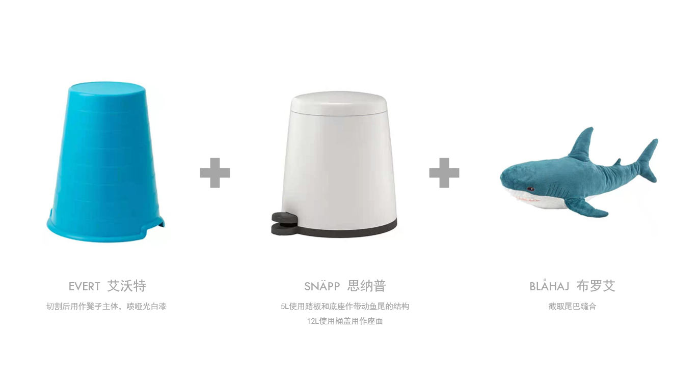
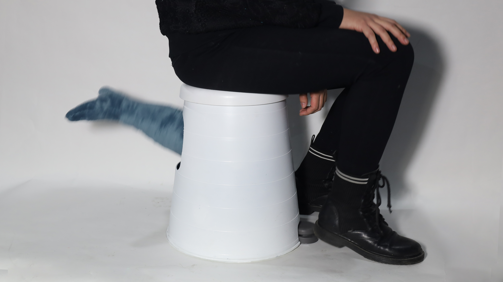
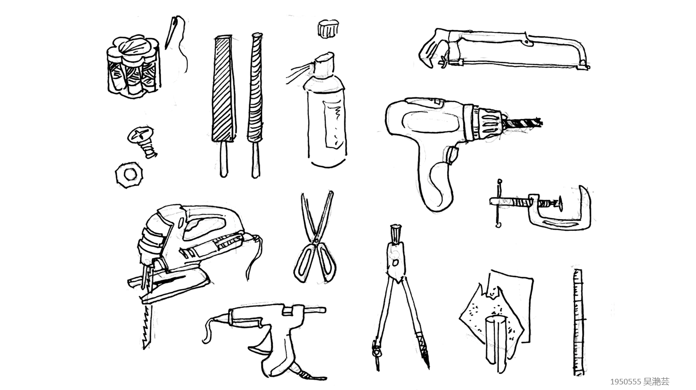

你身边是不是也总有一个抖腿的人？
Is there always a person who likes shaking his legs sits beside you?

鱼尾凳由两个宜家垃圾桶的不同部件（踏板和桶盖）、一只宜家凳子和一条毛绒玩具鲨鱼制作而成
The FLAPPY STOOL is made of different parts of two IKEA garbage bins (pedal and lid), an Ikea stool and a plush toy shark.




是第一个做出等比例模型的作业！也是第一次布置自己比较完整的展位。学会使用了一部分工坊工具。将剩余的材料做成了配套的帽子。
It is the first time for me to make an usable full-scale model! And it is also the first time for me to arrange a relatively complete booth. I Learned to use some workshop tools. The remaining materials were made into matching a hat.

实际使用效果
Practical effects